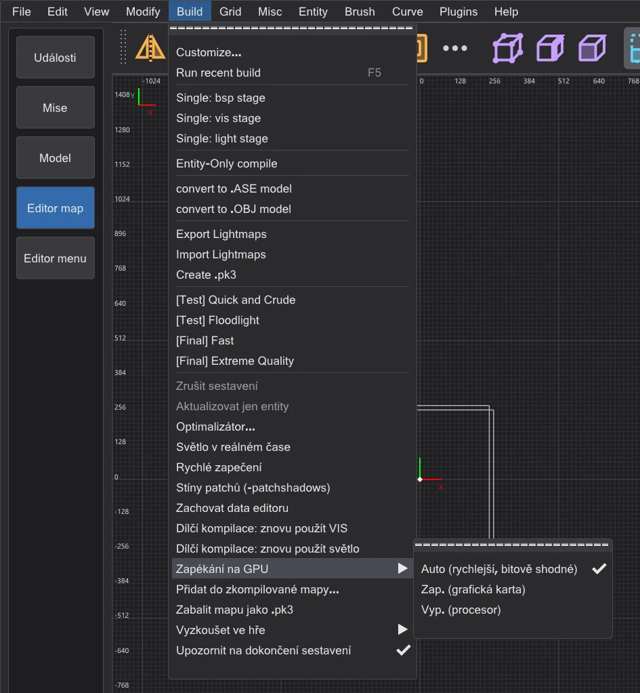
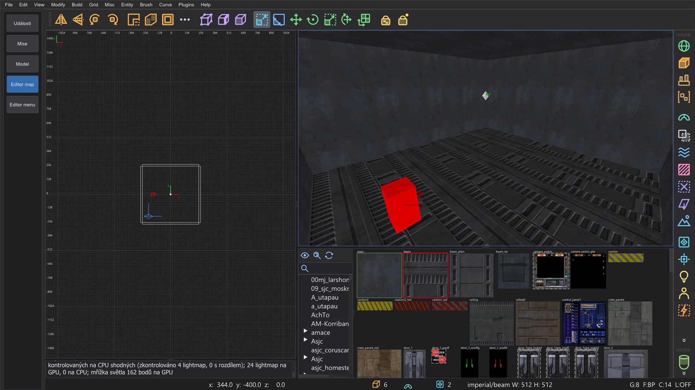

Editor map: zapékání na GPU
Spočítejte celé světlo mapy na grafické kartě - lightmapy, odrazy a mřížku světla - bajt po bajtu stejně jako na CPU a na velkých mapách mnohem rychleji.
Build > Zapékání na GPU (není v NetRadiant-Custom) rozhoduje, kde bhed_q3map2 počítá světlo každého kroku -light: Auto (rychlejší, bitově shodné) (výchozí), Zap. (grafická karta) (přepínač -bhedgpubake) nebo Vyp. (procesor). Zkompilovaná mapa je stejná, bajt po bajtu - grafická karta je jen rychlejší. Volba se pamatuje (nastavení BhedGpuBakeMode).
Auto (rychlejší, bitově shodné) vezme grafickou kartu jen tehdy, když je její výsledek bitově shodný (počítá s dvojnásobnou přesností) a očekává se, že bude rychlejší: velké mapy a kola odrazů. Malé mapy a -samples 4 na velkých mapách zůstávají na procesoru; grafická karta bez dvojnásobné přesnosti se nikdy nezvolí. Pamatuje si také, pro každou mapu a přepínače světla, jak dlouho trval poslední běh procesoru a poslední běh grafické karty, a od té doby bere rychlejší (i pro rychlé zapečení). Konzole uvede volbu a důvod, například "Zapékání na GPU (Auto): procesor - málo práce se světlem (34490 superluxelů)".

Zatímco se mapa sestavuje, okno průběhu sestavení a stavový řádek jmenují grafickou kartu. Po sestavení ukáže konzole zprávu o odchylkách: každá 64. lightmapa se spočítá podruhé na CPU a porovná luxel po luxelu. Poslední zpráva je také v popisku Zapékání na GPU. Rychlé zapečení světla v reálném čase (Editor map: rychlost a světlo v reálném čase) používá grafickou kartu také, když je položka zapnutá.

Co běží na grafické kartě#
- Lightmapy: pro každý luxel příspěvek každého světla s jeho stínovým paprskem, kontrola stylu, adaptivní supersampling z
-samples(i několik úrovní), filtr z-filtera sčítání světel v jejich pořadí. - Odrazy (
-bounce): každé kolo, se světelnými povrchy, které radiozita vytvoří. - Mřížka světla (světlo pro modely a hráče): každý bod mřížky se všemi světly.
- Na procesoru jako vždy: načítání, seznamy světel, vrcholové světlo, vytváření světel odrazů, sešívání, ukládání a zápis .bsp - a vše, co grafická karta nedokáže spočítat přesně (viz níže).
Proč je výsledek stejný#
Grafické karty obvykle počítají trochu jinak než procesor - proto GPU lightmappery jinde dávají mírně odlišné světlo. bhed_q3map2 dělá stejné výpočty ve stejném pořadí jako q3map2 na procesoru:
- každá operace se zaokrouhluje přesně jako na procesoru (žádné fused multiply-add); dělení se zaokrouhluje přesně v celočíselné aritmetice;
- q3map2 normalizuje vektory a počítá odmocniny s dvojnásobnou přesností; grafická karta rozhodne stejný zaokrouhlený výsledek pomocí zvlášť přesné aritmetiky float a ve vzácných těsných případech s dvojnásobnou přesností;
- stínové paprsky procházejí vlastním trasovacím stromem q3map2 s jeho tolerancemi a supersampling se řídí stejným pořadím vzorků jako procesor;
- nic se nesčítá v pořadí, v jakém vlákna náhodou skončí - každý luxel sčítá svá světla v pořadí seznamu.
Co grafická karta nedokáže spočítat přesně - alfa stíny a filtry světla (potřebují texturu), hodnota mimo bezpečný rozsah, výsledek, který není konečný - se pro danou lightmapu (nebo bod mřížky) spočítá na procesoru. Selže-li grafická karta nebo ji Windows během sestavení resetují, zbytek spočítá procesor. Lightmapa příliš velká pro grafickou paměť se počítá po částech svého seznamu světel.
O kolik rychlejší#
Měřeno na notebooku s Intel i9-14900HX (32 vláken) a NVIDIA RTX 4070 Laptop GPU, celý krok -light (medián tří běhů). Procesor používá všech 32 vláken; zapékání na GPU stále potřebuje procesor pro výše uvedené části, takže zisk je největší na velkých mapách s mnoha světly a koly odrazů.
| Mapa | Přepínače | Procesor | Grafická karta | Stejné luxely |
|---|---|---|---|---|
| mp__duel1 | -fast -patchshadows -samples 2 -filter -bounce 8 | 1.8 s | 1.2 s | 100 % |
| mp__duel1 | -fast -patchshadows -samples 2 -filter | 0.4 s | 0.4 s | 100 % |
| mp__duel1 | -fast -patchshadows -samples 4 -filter -bounce 2 | 1.1 s | 0.8 s | 100 % |
| md_ch_ben | -fast -patchshadows -samples 2 -filter -bounce 8 | 2.5 s | 2.2 s | 100 % |
| md_ch_ben | -fast -patchshadows -samples 2 -filter | 1.7 s | 1.6 s | 100 % |
| md_ch_ben | -fast -patchshadows -samples 4 -filter -bounce 2 | 2.3 s | 2.1 s | 100 % |
| kejim_post | -fast -filter -super 2 | 8.5 s | 6.2 s | 100 % |
| kejim_post | -fast -filter -super 2 -bounce 2 | 48.8 s | 20.0 s | 100 % |
| kejim_post | -fast -filter -super 2 -samples 3 | 9.0 s | 7.3 s | 100 % |
| md_am_sith | -fast -patchshadows -samples 2 -filter -bounce 8 | 62.0 s | 31.3 s | 100 % |
| md_am_sith | -fast -patchshadows -samples 2 -filter | 31.7 s | 12.1 s | 100 % |
| md_am_sith | -fast -patchshadows -samples 4 -filter -bounce 2 | 52.9 s | 28.0 s | 100 % |
| duel_mygeeto | -fast -patchshadows -samples 2 -filter -bounce 8 | 74.3 s | 47.1 s | 100 % |
| duel_mygeeto | -fast -patchshadows -samples 2 -filter | 31.6 s | 16.6 s | 100 % |
| duel_mygeeto | -fast -patchshadows -samples 4 -filter -bounce 2 | 67.2 s | 101.3 s | 100 % |
-samples 4 (101 s proti 67 s) - hluboký supersampling na mnoha hranách stínů se větví pro každý luxel jinak a v tom jsou grafické karty pomalé. S -samples 2 (nabídka Build) byla každá změřená mapa stejně rychlá nebo rychlejší.Pro příkazový řádek#
-bhedgpubake- světlo na grafické kartě (s-light).-bhedgpubakeauto- rychlejší z procesoru a grafické karty, grafická karta jen bitově shodně;-bhedgpubakezeiten <cpu ms> <gpu ms>předá změřené časy posledních běhů (0 = neznámé).-bhedgpubakecheck N- každá N-tá lightmapa se spočítá i na CPU (výchozí 64, až milion dvojic světla a luxelu;1kontroluje všechny,0žádné). Zpráva se zapíše také do<map>.bhedgpu.txt.-bhedgpuadapter Nnebo část názvu - která grafická karta (jinak nejrychlejší).
-bhedgpudxr s -bhedgpu): trasuje stínové paprsky asi dvakrát rychleji, ale bez tolerancí q3map2 mine asi 0.15 % zásahů a nevidí pevné části trasovacího stromu - a stínové paprsky jsou jen 7-8 % času zapékání na GPU. Pro zapékání se proto nepoužívá.